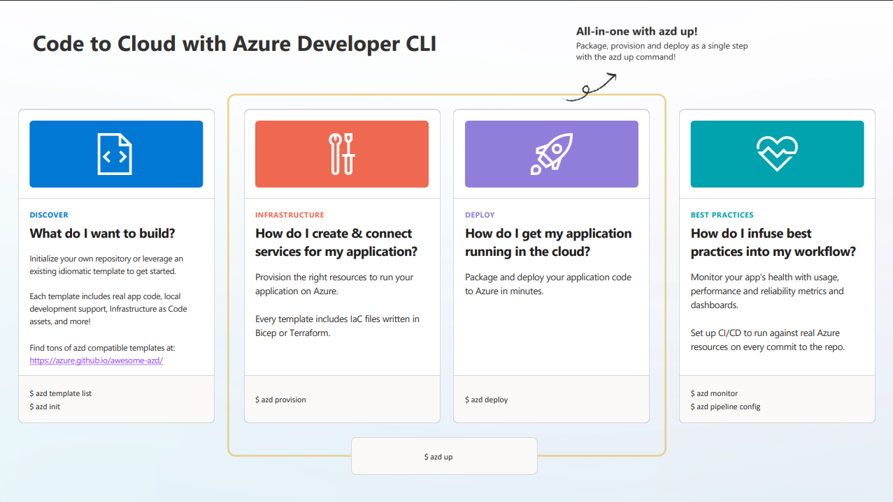

1. Discover: AZD¶
Objective: Discover the Azure Developer CLI Tool and validate it works on this machine.
Estimate: 5 mins
Analogy: Meet Your Contractor
What is azd?¶
Think about that analogy to building a custom home. You could do everything yourself - hire individual workers, order materials, coordinate schedules, get permits, manage inspections. Or you could hire a general contractor who handles it all for you.
The Azure Developer CLI (azd) is your general contractor for Azure deployments.
Instead of manually configuring dozens of Azure resources through the portal, you tell your contractor (azd) to get it done with one instruction: azd up. Then sit back and watch as the cloud infrastructure is provisioned, the app is deployed, and everything is configured and running.
How does this work? We'll talk about it briefly below, then cover it in more detail when we discover azd templates.
Why use azd?¶
Having a general contractor on your team brings efficiency and repeatability - and simplifies your effort.
- Convenience: Say "build it" (
azd up) or "tear it down" (azd down). No need to manage individual subcontractors or memorize complex Azure resource configurations. - Speed: Get your project built in minutes instead of hours or days. Your contractor automates all the tedious coordination work - and can make updates or fixes with minimal effort.
- Best practices built-in: Templates follow Microsoft's architectural standards - it's like working with blueprints that passed all building codes. You don't need to be an Azure expert.
- Repeatable builds: Everything is infrastructure-as-code, documented and version-controlled. Want to build the same house in a different city? Your contractor can reproduce it exactly.
- Consistent process: Learn the workflow once, use it everywhere. Same contractor, same process - whether you're building with Python, JavaScript, .NET, or other languages.
How does it work?¶
Think of azd as a contractor with a toolbox of commands that they can use to execute every step of the construction plan in your design blueprint - taking you from design (code) to deployment (cloud) in a streamlined way.
The figure gives a conceptual look at the azd workflow in action:
- Discovery - use azd to find the right template and initialize it
- Provision - use azd to setup the infrastructure for that solution
- Deployment - use azd to deploy the solution to that infrastructure
- Production - use azd to automate workflows and monitor deployments

And here's a sneak peek at the "contractor toolbox" of commands that make it happen!
azd init: Choose your blueprint (template) or convert your existing plans to work with azd.azd auth login: Verify your identity and credentials with Azure (the site owner).azd provision: "Build the foundations & structure" - create Azure infrastructure without deploying code.azd deploy: "Update the interior" - redeploy just your code to the provisioned infrastructure.azd up: "Build the whole house" - provision infrastructure + deploy code in one command.azd monitor: "Check the security cameras" - view application logs and metrics.azd down: "Demolish everything" - delete all Azure resources to avoid charges.
Exercise: Validate Installation¶
In this exercise, we'll verify that azd installed correctly, try a few commands, and learn how to get help with the CLI itself, or by using AI assistance.
These exercises will use the commandline. Open the Visual Studio Code terminal and get ready to try the commands. Remember to use copy-paste for minimal errors.
1: Check Installed Version¶
-
Run this command:
azd version -
You should see something like:
azd version 1.20.1 (commit 248e7f606c1e6e119320295779c30893094394cd) -
✅ Congratulations - azd is installed in your development environment.
2: Explore The Commands¶
-
Run this command:
azd --help -
You should see something like:
The Azure Developer CLI is an open-source tool that helps onboard and manage your project on Azure Usage azd [command] Commands Getting started init : Initialize a new application. up : Provision and deploy your project to Azure with a single command. Create and manage Azure resources auth : Authenticate with Azure. deploy : Deploy your project code to Azure. down : Delete your project's Azure resources. provision : Provision Azure resources for your project. publish : Publish a service to a container registry. Manage and show settings completion : Generate shell completion scripts. config : Manage azd configurations (ex: default Azure subscription, location). env : Manage environments (ex: default environment, environment variables). show : Display information about your project and its resources. version : Print the version number of Azure Developer CLI. Beta commands add : Add a component to your project. extension : Manage azd extensions. hooks : Develop, test and run hooks for a project. infra : Manage your Infrastructure as Code (IaC). monitor : Monitor a deployed project. package : Packages the project's code to be deployed to Azure. pipeline : Manage and configure your deployment pipelines. restore : Restores the project's dependencies. template : Find and view template details. Enabled alpha commands mcp : Manage Model Context Protocol (MCP) server. (Alpha) ... ... -
✅ Congratulations - you know how to find the right commands and options when needed!
3. Get Command Details¶
Notice how the azd commands are set up to mimic the construction stages for an application: init (plan), up (build), deploy (update), monitor (inspect), down (demolish). To learn details of any specific command you can add the --help flag:
-
Ask about the
initcommandazd init --help -
You should see something like this explaining what the command does, and how it can be configured to provide a customized experience.
Initialize a new application in your current directory. • Running init without flags specified will prompt you to initialize using your existing code, or from a template. • To view all available sample templates, including those submitted by the azd community, visit: https://azure.github.io/awesome-azd. Usage azd init [flags] Flags -b, --branch string : The template branch to initialize from. Must be used with a template argument (--template or -t). -e, --environment string : The name of the environment to use. -f, --filter strings : The tag(s) used to filter template results. Supp This shows all options and examples for the `init` command. Use `--help` with any command when you need guidance - like asking your contractor to explain their process. -
We'll run this command in a future lesson. For now, just remember the syntax to ask for help.
4. Ask Copilot For Help¶
This is an optional exercise. Ask Copilot to give you more insight into questions you might have about the tool or the commands themselves. Here are some seed prompts.
ASK COPILOT
- How is Azure Developer CLI different from Azure CLI? Why do I need both?
- What does
azd updo as compared toazd provision? - What does
azd monitordo? Do I need to configure my template for using it?
Next: Let's move on to understanding the AZD templates - these are the blueprints your general contractor needs, to build your AI application "home"